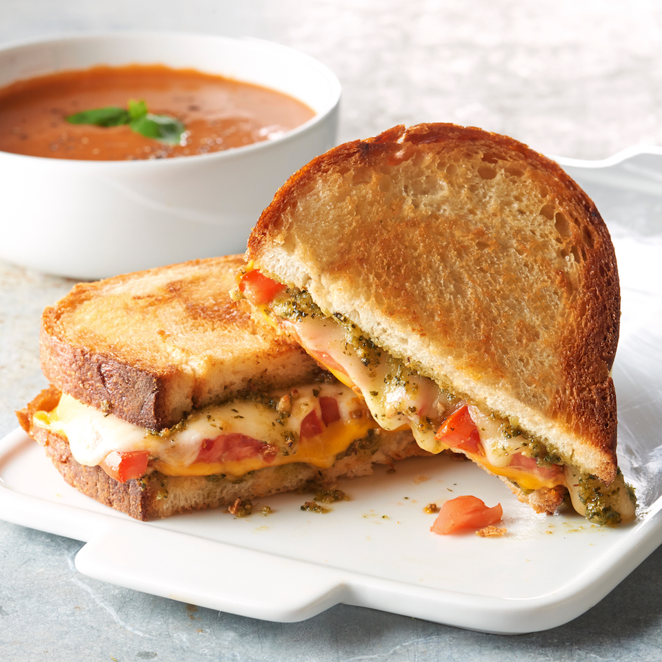

Pesto Grilled Cheese Sandwich

Description
I first had this sandwich at a small restaurant and immediately went home to duplicate the recipe. I've been making my grilled cheese sandiwches this way ever since!
Ingredients
- 2 slices Italian bread
- 1 tablespoon softened butter, divided
- 1 tablespoon prepared pesto sauce, divided
- 1 slice provolone cheese
- 2 slices tomato
- 1 slice American cheese
Directions
- Spread one side of a slice of bread with butter, and place it, buttered side down, intro a nonstick skillet over medium heat
- Spread the top of the bread slice in the skillet with half the pesto sauce, and place a sliece of provolone cheese, the tomato slices, and the slice of American cheese onto the pesto.
- Spread remaining pesto sauce on one side of the second slice of bread, and place the bread slice, pesto side down, onto the sandwich. Butter the top side of the sandwich.
- Gently fry the sandwich, flipping once, until both sides of the bread are golden brown and the cheese has melted, about 5 minutes per side.